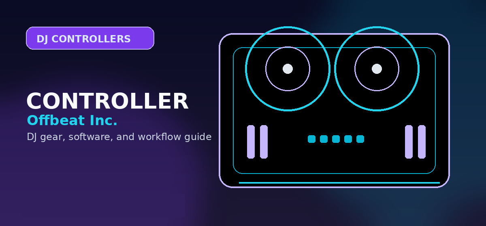

Pioneer DDJ-FLX4
The FLX4 is the smaller, cheaper, more portable controller for beginners, bedroom DJs, and simple two-deck setups.
- 2-channel layout
- Best for learning and home sessions
- Lower price and easier portability
Pioneer DDJ-FLX4 vs DDJ-FLX6 — full comparison of specs, performance pads, software, and value for money in 2026.

Pioneer's FLX series is the current mid-range lineup. The FLX4 sits at roughly $299–$349; the FLX6-GT at roughly $499–$549. Both run Serato DJ Pro and rekordbox.
Buy the DDJ-FLX4 if you are learning from scratch, play mostly solo 2-deck sets, need portability, and want to save $150–$200. Buy the DDJ-FLX6-GT if you DJ events, need mic and booth options, plan B2B sets, or want four-channel flexibility.
The FLX4 is the smaller, cheaper, more portable controller for beginners, bedroom DJs, and simple two-deck setups.
The FLX6-GT adds four channels, larger jog wheels, mic input, booth output, and aux input for DJs moving toward events and flexible routing.
The FLX4 covers most beginner use cases. The FLX6-GT makes sense when you need a microphone, booth output, aux input, four-channel mixing, or more room to grow.
| Feature | DDJ-FLX4 | DDJ-FLX6-GT |
|---|---|---|
| Price (MSRP) | ~$299–$349 | ~$499–$549 |
| Channels | 2-channel | 4-channel |
| Jog wheel diameter | 5 inches | 6 inches |
| Dedicated mic input | No | Yes |
| Booth output | No | Yes |
| Aux input | No | Yes |
| Ideal for | Bedroom / beginner / mobile | Events / B2B / growing DJs |
The DDJ-FLX4 is the better value for beginners. The DDJ-FLX6-GT is the better buy for event work, B2B, and DJs who need more I/O and four-channel control.
Use this page as one part of the decision, not the whole decision. Confirm the current price, software compatibility, operating-system support, and whether the option still fits the way you actually practice or perform.
Before changing gear, software, or workflow, connect the recommendation to an actual use case: home practice, recorded mixes, streaming, mobile events, club preparation, or production crossover. A choice that looks best on paper can still be wrong if it adds setup friction or does not match the way you will play.
The safest workflow is to test the setup exactly as you will use it, then document the cable path, software version, library source, and backup plan. That prevents most of the avoidable failures that happen when DJs buy the right-looking tool but never validate the whole system.
Use these official pages to confirm current specifications, software compatibility, and support details before buying.
It is worth it if you need four channels, a mic input, booth output, aux input, larger jog wheels, or room to grow into event and B2B setups.
Yes. The DDJ-FLX4 is enough for most beginners, bedroom DJs, and mobile practice setups that do not require extra inputs or four-channel mixing.
Yes. The source comparison states that both run Serato DJ Pro and rekordbox.
Confirm software compatibility, audio outputs, headphone cueing, driver support, and whether the controller fits your real practice or gig setup.
It can be, but beginners should prioritize reliable software support, simple routing, and controls that teach transferable DJ habits before paying for advanced performance features.